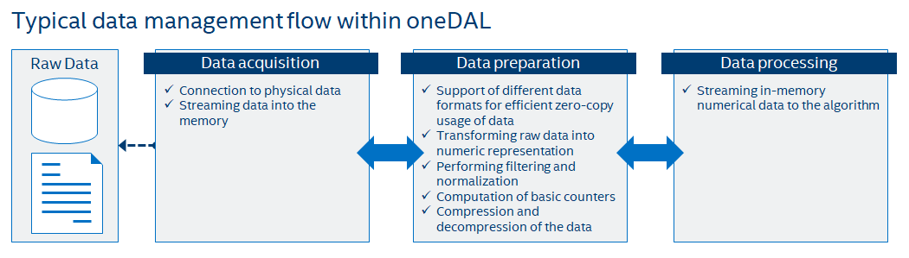

Data management
This section includes descriptions of concepts and objects that operate on data. For oneDAL, such set of operations, or data management, is distributed between different stages of the data analytics pipeline. From a perspective of data management, this pipeline contains three main steps of data acquisition, preparation, and computation (see the picture below):
Raw data acquisition
Transfer out-of-memory data from various sources (databases, files, remote storages) into an in-memory representation.
Data preparation
Support different in-memory data formats.
Compress and decompress the data.
Convert the data into numeric representation.
Recover missing values.
Filter the data and perform data normalization.
Compute various statistical metrics for numerical data, such as mean, variance, and covariance.
Algorithm computation
Stream in-memory numerical data to the algorithm.
In complex usage scenarios, data flow goes through these three stages back and forth. For example, when the data are not fully available at the start of the computation, it can be done step-by-step using blocks of data. After the computation on the current block is completed, the next block should be obtained and prepared.
{kind=link}
Key concepts
oneDAL provides a set of concepts to operate on out-of-memory and in-memory data during different stages of the data analytics pipeline.
Dataset
The main data-related concept that oneDAL works with is a dataset. It is an in-memory or out-of-memory tabular view of data, where table rows represent the observations and columns represent the features.

The dataset is used across all stages of the data analytics pipeline. For example:
At the acquisition stage, it is downloaded into the local memory.
At the preparation stage, it is converted into a numerical representation.
At the computation stage, it is used as one of the inputs or results of an algorithm or a descriptor properties.
Data source
Data source is a concept of an out-of-memory storage for a dataset. It is used at the data acquisition and data preparation stages for the following:
To extract datasets from external sources such as databases, files, remote storages.
To load datasets into the devices local memory. Data do not always fit the local memory, especially when processing with accelerators. A data source provides the ability to load data by batches and extracts it directly into the devices local memory. Therefore, a data source enables complex data analytics scenarios, such as online computations.
To filter and normalize feature values that are being extracted.
To recover missing feature values.
To detect outliers and recover the abnormal data.
To transform datasets into numerical representation. Data source shall automatically transform non-numeric categorical and continuous data values into one of the numeric data formats.
For details, see data sources section.
Table
Table is a concept of a dataset with in-memory numerical data. It is used at the data preparation and data processing stages for the following:
To store heterogeneous in-memory data in various data formats, such as dense, sparse, chunked, contiguous.
To avoid unnecessary data copies during conversion from external data representations.
To transfer memory ownership of the data from user application to the table, or share it between them.
To connect with the data source to convert from an out-of-memory into an in-memory dataset representation.
To support streaming of the data to the algorithm.
To access the underlying data on a device in a required data format, e.g. by blocks with the defined data layout.
For thread-safety reasons and better integration with external entities, a table provides a read-only access to the data within it, thus, table concept implementations shall be immutable.
This concept has different logical organization and physical format of the data:
Logically, a table is a dataset with \(n\) rows and \(p\) columns. Each row represents an observation and each column is a feature of a dataset. Physical amount of bytes needed to store the data differ from the number of elements \(n \times p\) within a table.
Physically, a table can be organized in different ways: as a homogeneous, contiguous array of bytes, as a heterogeneous list of arrays of different data types, in a compressed-sparse-row format.
For details, see tables section.
Metadata
Metadata concept is assotiated with a dataset and holds information about its structure and type. This information shall be enough to determine the particular type of a dataset, and it helps to understand how to interact with a dataset in oneDAL (for example, how to use it at a particular stage of data analytics pipeline or how to access its data).
For each dataset, its metadata shall contain:
The number of rows \(n\) and columns \(p\) in a dataset.
The data type of each feature (e.g.
floatordouble).
Note
Metadata can contain both compile-time and run-time information. For example, basic compile-time metadata is the type of a dataset - whether it is a particular data source or a table. Run-time information can contain the feature types and data types of a dataset.
Table builder
A table builder is a concept that is associated with a particular table type and is used at the data preparation and data processing stages for:
Iterative construction of a table from another tables or a different in-memory dataset representations.
Construction of a table from different entities that hold blocks of data, such as arrays, pointers to the memory, external entities.
Changing dataset values. Since table is an immutable dataset, a builder provides the ability to change the values in a dataset under construction.
Encapsulating construction process of a table. This is used to hide the implementation details as they are irrelevant for users. This also allow to select the most appropriate table implementation for each particular case.
Providing additional information on how to create a table inside an algorithm for results. This information includes metadata, memory allocators that shall be used, or even a particular table implementation.
For details, see table builders section.
Accessor
Accessor is a concept that defines a single way to get the data from an in-memory numerical dataset. It allows:
To have unified access to the data from various sets of different objects, such as tables or table builders, without exposing their implementation details.
To convert a variety of numeric data formats into a smaller set of formats.
To provide a flat view on the data blocks of a dataset for better a data locality. For example, some accessor implementation returns feature values as a contiguous array, while the original dataset stored row-by-row (there are strides between values of a single feature).
To acquire data in a desired data format for which a specific set of operations is defined.
To have read-only, read-write and write-only access to the data. Accessor implementations are not required to have read-write and write-only access modes for immutable entities like tables.
For details, see accessors section.
Use-case example for table, accessor and table builder
This section provides a basic usage scenario of the table, table builder, and accessor concepts and demonstrates the relations between them. The following diagram shows objects of these concepts, which are highlighted by colors:
Table builder objects are blue.
Table objects are cyan.
Accessors are yellow.
Grey objects are not a part of oneDAL specification and they are provided just for illustration purposes.
{kind=link}
To perform computations on a dataset, one shall create a table object first. It can be done using a data source or a table builder object depending on the situation. The diagram briefly shows the situation when table is interatively created from a various external entities (not shown on a diagram) using a table builder.
Once a table object is created, the data inside it can be accessed by its own interface or with a help of a read-only accessor as shown on the diagram. The table can be used as an input in computations or as a parameter of some algorithm.
Algorithms results also contain table objects. If one needs to change the data within some table, a builder object can be constructed for this. Data inside a table builder can be retrieved by read-only, write-only or read-write accessors.
Accessors shown on the diagram allow to get data from tables and table builders as flat blocks of rows.